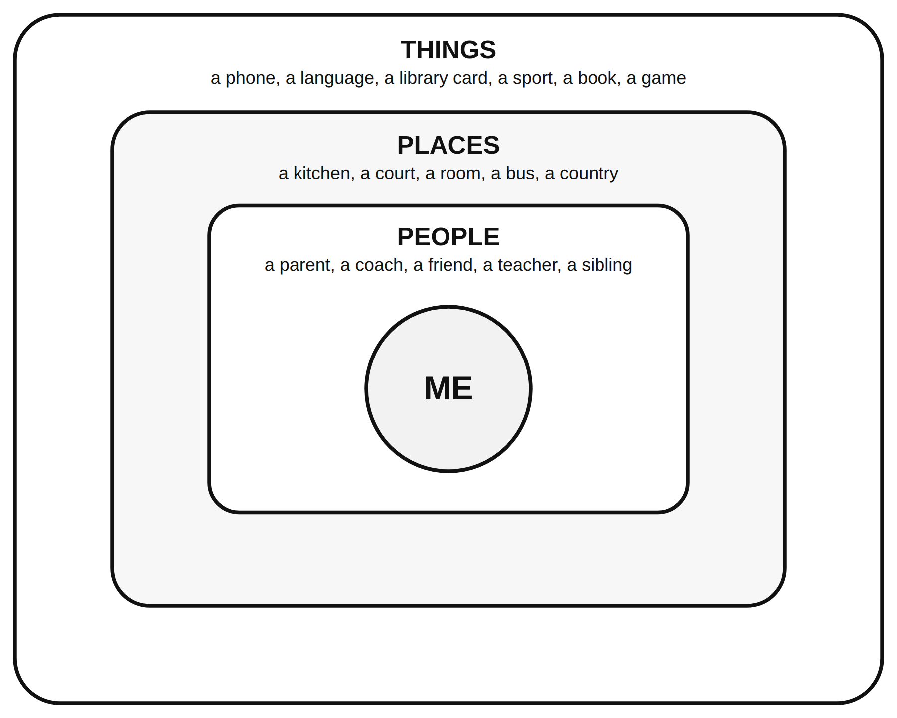

Name: ______________________________ Date: ______________ Period: ______
Directions: Three parts. Part 1 is the everyday sort: ten things about a person; mark each H (mostly heredity), E (mostly environment), or B (both). Part 2 is your influences map. It is private. It goes in your FACS folder and nobody reads it unless you choose. Use roles, not names ("a coach," "my aunt"). Part 3 is the only part I collect: three sentences on the one influence that has done the most to make you who you are, still with no names.
Word bank in Spanish
| English | Spanish |
|---|---|
| heredity | herencia |
| environment | ambiente |
| family | familia |
| friend | amigo, amiga |
| influence | influencia |
Part 1: Two sources, and the everyday sort
Heredity means: _____________________________________________________________________________
Environment means: __________________________________________________________________________
The rule: almost everything about a person is ______________.
Mark each item H, E, or B. Write a reason for three of them.
| # | Item (picture cue) | H, E, or B | Reason (three of them) |
|---|---|---|---|
| 1 | Eye color (an eye) | ||
| 2 | Height (a ruler) | ||
| 3 | Your accent (a speech bubble) | ||
| 4 | Being ticklish (a feather) | ||
| 5 | Liking a certain kind of music (a note) | ||
| 6 | Being shy or outgoing (two faces) | ||
| 7 | Being good at drawing (a pencil) | ||
| 8 | Your first language (a book) | ||
| 9 | A food allergy (a peanut with a line through it) | ||
| 10 | How you handle losing (a game piece) |
Grade 6: items 1, 2, 3, 5, 8, and 9.
After the reveal: change any answer you want to and write why next to it.
Part 2: My influences map (private; not collected)
Draw yourself in the middle circle (a stick figure is fine, or just write "me"). Around it, in the three rings, write at least eight influences: people, places, and things that have shaped who you are. No names; use roles. Next to each, write the aspect it shaped most: P (body), E (feelings), S (people), I (thinking). Star the three biggest.

If the rings are too small, list them here instead:
| Influence (a role, a place, or a thing) | People, place, or thing? | Aspect (P, E, S, I) | Star? |
|---|---|---|---|
Grade 6 and IEP/504: at least five influences.
Part 3: The biggest one (collected)
Which one influence on your map has done the most to make you who you are right now? Three sentences: what it is (a role, not a name), what aspect it shaped, and why you picked it over the other two stars.
Sentence starter: "The biggest influence on me is ___ because ___."
Grade 8 stretch (Part 4): pick one influence and write how it might look different for a student in another country or another decade. Would the aspect it shaped change?
Exit card (3-2-1)
3 things about me that are mostly environment: ________________________________________________________
2 things about me that are mostly heredity: __________________________________________________________
1 influence I want more of next year: _______________________________________________________________